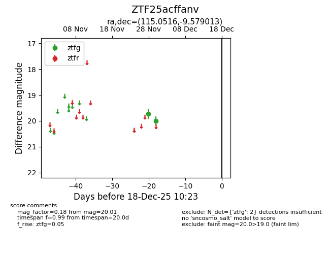
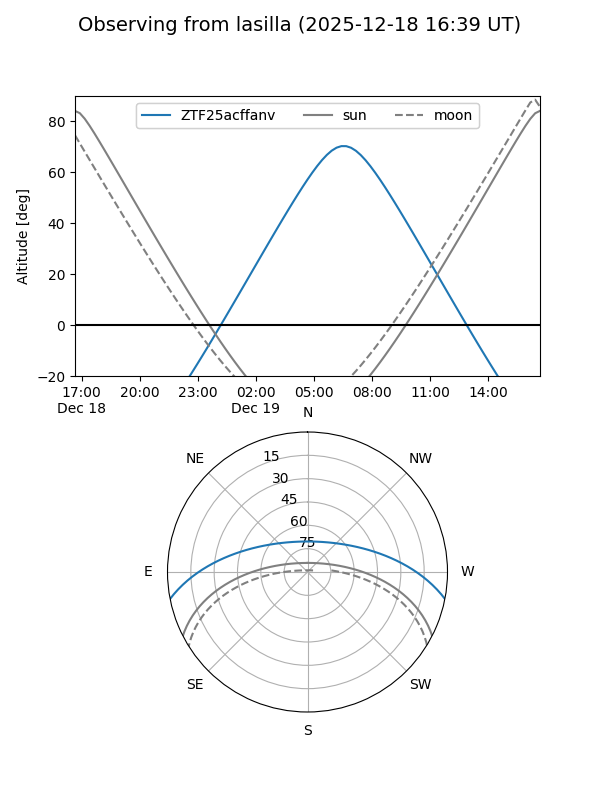
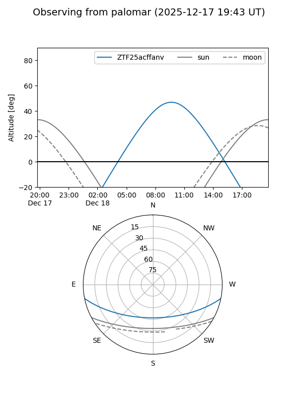

ZTF25acffanv
Target ZTF25acffanv at 2025-12-18 11:17
Aliases and brokers:
FINK: fink-portal.org/ZTF25acffanv
Lasair: lasair-ztf.lsst.ac.uk/objects/ZTF25acffanv
ALeRCE: alerce.online/object/ZTF25acffanv
alt names
ZTF25acffanv (ztf,fink_ztf)
Coordinates:
equatorial (ra, dec) = 115.0516,-9.57901
equatorial (HMS+DMS) = 07:40:12.38,-09:34:44.45
galactic (l, b) = (227.0858,+6.28402)
Photometry
last ztfg=20.01
2 ztfg detections
Lightcurve

Visibility


Additional plots